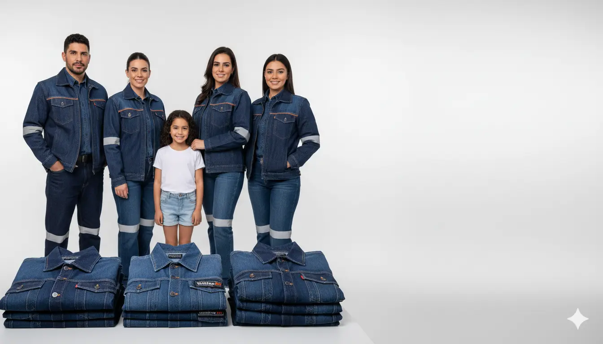
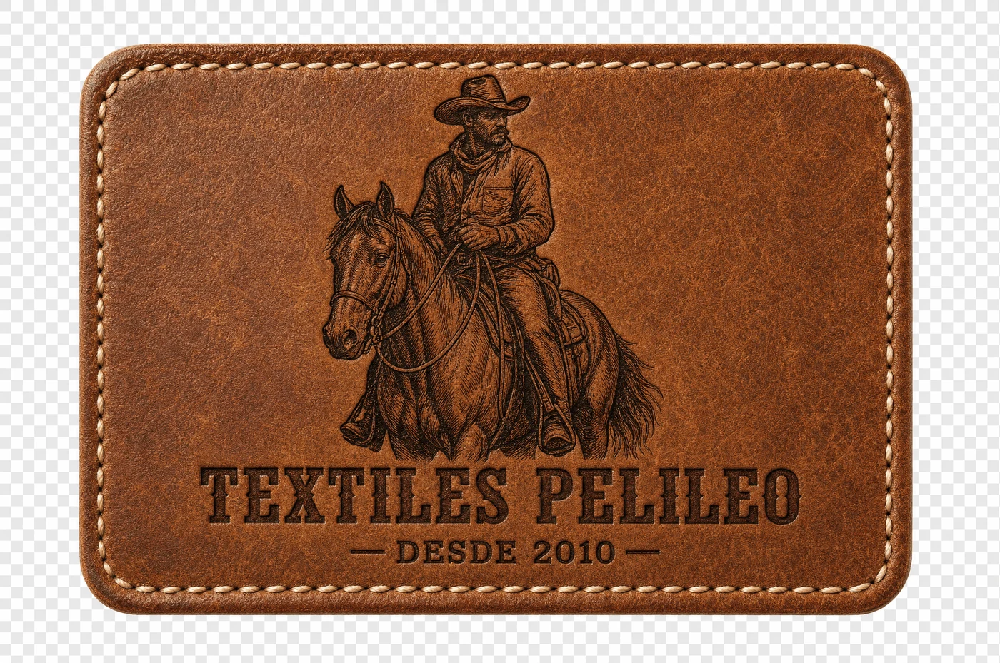
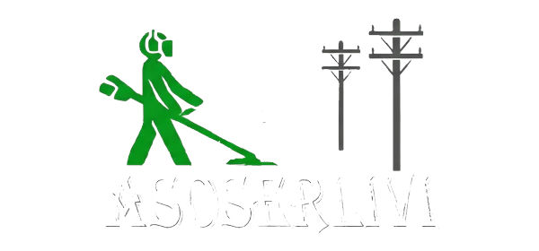
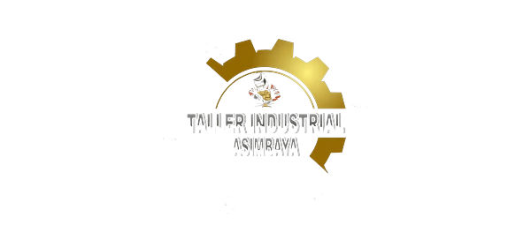
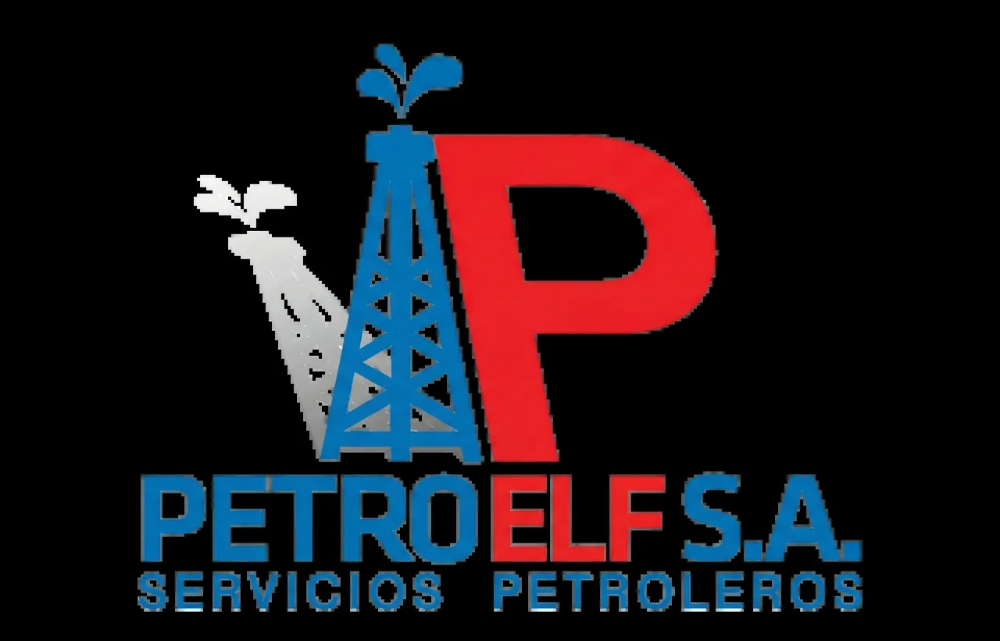
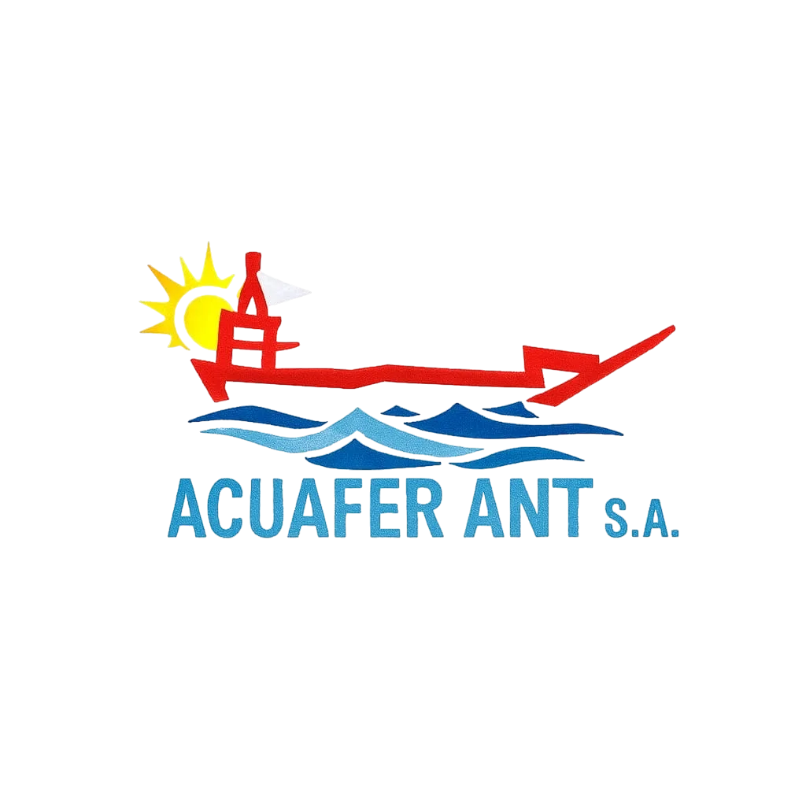
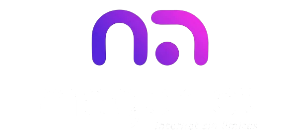

Líneas de producto

Fabricamos pantalones, camisas y uniformes industriales directo del taller en Pelileo. Telas Gregori y Mistral de Textiles Vicuña, tallas completas y calidad que aguanta el trabajo pesado.
Cotización inmediata por WhatsApp · atención directa del taller hoy mismo
Trabajamos directo con el taller, sin intermediarios. Eso significa mejor calidad, tallas completas reales y precios justos para tu empresa.
Sin revendedores. Calidad constante y precios accesibles al detalle y por mayor.
Gregori 14oz y Mistral 7.5oz, 100% algodón, fabricadas por Textiles Vicuña.
Desde talla 26 hasta 46 bajo pedido. Pantalones y camisas para todos.
A todo Ecuador con Servientrega, seguro incluido y entrega en 1–3 días.
Las prendas favoritas de empresas, constructoras y talleres en todo el país.

Atención personalizada para constructoras, industrias, talleres, logística y seguridad privada. Producimos bajo pedido con tu logotipo bordado y tallas para todo el personal.


Estamos en Pelileo, Barrio El Tambo, una de las zonas con mayor tradición textil del Ecuador. Desde 2010 fabricamos prendas resistentes para trabajo con telas gruesas, duraderas y de alto rendimiento.
Controlamos cada costura: triple costura con hilo nylon, herrajes inoxidables y telas que no destiñen. Calidad que se nota desde el primer uso.
Conoce nuestra historiaEmpresas que confían en nosotros





"Pedimos uniformes para toda la cuadrilla. La tela Gregori es muy resistente y el bordado quedó impecable. Volveremos a pedir."
"Excelente atención por WhatsApp y envío rápido a Quito. Los pantalones llegaron en las tallas exactas que pedimos."
"Compramos camisas con reflectivo para seguridad. Buena calidad, precio justo y directo de fábrica. Recomendados."
Cuéntanos qué prenda, tallas y cantidad necesitas por WhatsApp.
Te enviamos precios, disponibilidad y opciones de personalización.
Acordamos diseño, bordado y forma de pago. Producimos tu pedido.
Enviamos por Servientrega a todo Ecuador en 1–3 días, asegurado.
Te ayudamos con disponibilidad, tallas y cotización para tu empresa o pedido personal. Atención rápida y directa del taller.
Iniciar conversación